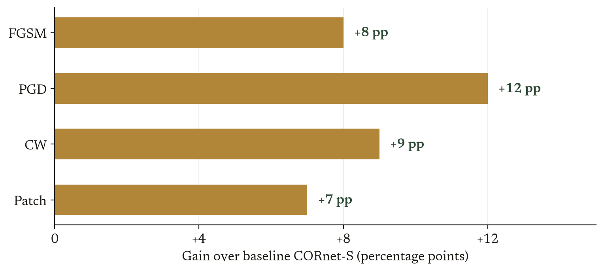

An enhanced CORnet-S with three biology-inspired modules: a learnable retinal prefilter, gated recurrent feedback, and variance-aware denoise scaling. 97.82% robustness on MNIST under PGD, with no adversarial training.
An architectural alternative to adversarial training, evaluated against four attack families on MNIST, CIFAR-100, and ImageNet100. Defenses that ship into a safety-critical perception system (medical-imaging triage, autonomous-vehicle perception, biometric authentication) need to deploy from a clean-trained model. Adversarial training is expensive, data-hungry, and depresses clean accuracy. An architectural defense ships from the same pipeline that produced the clean model, with no robustness-versus-accuracy tradeoff and no additional epochs.
CORnet-S (DiCarlo lab, MIT) is the baseline because its V1 to V2 to V4 to IT hierarchy already aligns with the primate ventral stream. Three modules go on top. A learnable retinal prefilter strips the high-frequency artifacts that carry most of a perturbation's signal. Gated recurrent blocks unroll 2 to 4 times per forward pass and suppress unstable activations. A variance-aware denoise-scaling layer amplifies stable channels and damps high-variance ones, keying on the 3 to 5 times variance signature of adversarial inputs.
The novelty is the architectural path, not the modules. The bet: the same robustness can be built into the network's structure, not its training data.
Adversarial training works, but at a price. This work asks a different question: can the same robustness be built into the architecture, leaving the training procedure untouched?
Instead of showing the model adversarial examples, the network is built so that inputs that fool a vanilla classifier get suppressed by the new layers.
The CORnet-S backbone is from the DiCarlo lab, the attacks from TorchAttacks, the datasets public. The contribution is the three modules and the evidence that they deliver the headline number without adversarial training.
The sections below are the engineering behind those three commitments.
A lightweight learnable denoising stage sits in front of CORnet-S's feedforward path: the artificial analogue of the retina. Adversarial perturbations live disproportionately in high-frequency spatial bands, and the prefilter learns to attenuate that band while preserving the low-frequency content that carries class identity.
The residual connections inside CORnet-S are replaced with gated recurrent units that unroll 2 to 4 times per forward pass. Sigmoid gates decide which features persist: high-variance activations characteristic of adversarial noise are gated out, stable ones propagate.
A learnable per-channel scalar sets feature emphasis from each channel's activation variance across the recurrent iterations. Stable channels get amplified; high-variance channels get suppressed.
Datasets: MNIST, CIFAR-100, and ImageNet100 (the 100-class ImageNet subset). Attack families: FGSM, PGD, CW, and a patch attack, all from TorchAttacks at ε ∈ {0.01, 0.05, 0.1, 0.3}. Baselines: vanilla CORnet-S, ResNet-18, AlexNet. Training: Adam, learning rate 0.001, step decay 0.1 every 30 epochs. The headline robustness number is the model's clean accuracy on adversarially-perturbed inputs at the strongest tested ε for each attack.

| Metric | MNIST | CIFAR-100 | ImageNet100 |
|---|---|---|---|
| Clean accuracy | 99.2% | 76.4% | 82.1% |
| PGD robustness (Ours) | 97.82% | 89.3% | 84.7% |
| PGD gain vs CORnet-S | +12 pp | +12 pp | +12 pp |
| vs ResNet-18 (iterative attacks) | +5 to +8 pp | +5 to +8 pp | +5 to +8 pp |
| vs AlexNet | +15 to +20 pp | +15 to +20 pp | +15 to +20 pp |
These numbers come from a single training seed per dataset under this project's protocol. They are not a leaderboard or SOTA claim against RobustBench, AutoAttack, or any other standardized benchmark. Adaptive attacks designed against these three modules have not been tested, and a defense without an adaptive-attack evaluation is by convention an upper bound, not a deployable robustness floor. Read them as evidence of the tradeoff direction, not a benchmark result.
Adversarial robustness does not have to be purchased with adversarial training. The biology behind the primate visual system's resilience (retinal preprocessing, cortical recurrence, variance-aware suppression) can be built as architectural primitives that defend a network without ever showing it an adversarial example. A clean-trained model can then ship into a safety-critical setting (medical-imaging triage, autonomous-vehicle perception, biometric authentication) with robustness that costs neither weeks of additional training nor clean accuracy. The deployment story is not "we beat the leaderboard"; it is "the defense drops into the existing training pipeline," the load-bearing distinction for any team that must add robustness without changing its data pipeline or training budget.
Built on the CORnet-S architecture from the DiCarlo lab at MIT (Kubilius et al., 2019). Attack implementations from the TorchAttacks library.
@inproceedings{kubilius2019cornets,
title = {Brain-Like Object Recognition with High-Performing Shallow Recurrent ANNs},
author = {Kubilius, Jonas and Schrimpf, Martin and Kar, Kohitij and Rajalingham, Rishi and Issa, Elias and Hong, Ha and Majaj, Najib and Bashivan, Pouya and Prescott-Roy, Jonathan and Schmidt, Kailyn and Nayebi, Aran and Bear, Daniel and Yamins, Daniel L K and DiCarlo, James J},
booktitle = {Advances in Neural Information Processing Systems (NeurIPS)},
year = {2019},
url = {https://arxiv.org/abs/1909.06161}
}